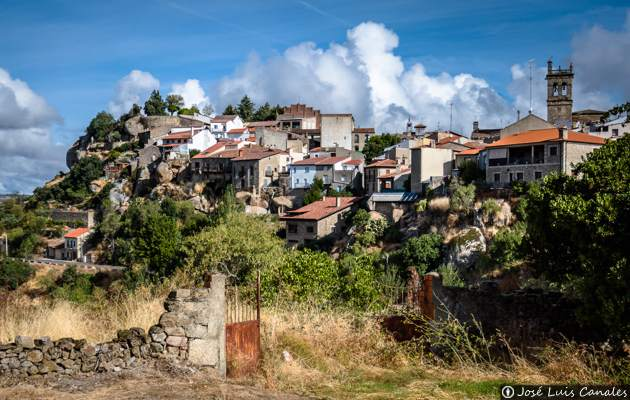

FERMOSELLE
Localización
Geografía
Historia
Naturaleza
Cultura
Tradiciones
Localización
Fermoselle se encuentra situado en el confín suroccidental de la comarca zamorana de Sayago, cercado por el río Duero, al poniente y mediodía, y el Tormes, al sur, que confluyen en el paraje de Las Dos Aguas o Ambasaguas. En las otras orillas quedan Portugal y la provincia de Salamanca. Su paisaje más conocido se encuentra junto a estos ríos, lo que aquí denominan arribes, formados por las pendientes ribereñas que desde tiempos inmemorables se aprovechan para la agricultura de bancales por la bonanza térmica que propicia el escarpe y que ha favorecido el cultivo del viñedo, el olivo y frutales que no son tan frecuentes en la pinllanura adyacente.
Geografía
Sus límites municipales vienen marcados al sur y al oeste por accidentes naturales. Al sur con el río Tormes que a su vez separa las provincias de Zamora —a la que pertenece Fermoselle— y de Salamanca, unidas a través del puente de San Lorenzo, en el paraje denominado de La Cicutina. La margen izquierda del Tormes, perteneciente a la provincia de Salamanca, es compartida por los municipios ribereños de Villarino, Trabanca y Almendra. El límite oeste está formado por el tramo internacional del río Duero, al ser su titularidad compartida por España y Portugal. Sobre este último río hay un paso fronterizo que fue construido sobre la presa de Bemposta, en el tramo de aprovechamiento hidroeléctrico portugués del río Duero. Sus límites norte y este lindan con el municipio zamorano de Villar del Buey, en los que la penillanura de la comarca de sayaguesa no ha generado ningún accidente natural reseñable, salvo el extremo suroeste que roza el embalse de Almendra.
El casco urbano de la villa ha sido milagrosamente preservado a través de las épocas, motivo por el que la Comisión de Patrimonio lo declaró Conjunto histórico-artístico
Historia
La villa de Fermoselle data hacia atrás en el tiempo más de dos milenios a la época romana y prerromana. Las características topográficas de esta villa denotan estar poblada desde los tiempos más remotos, como prueba el ara druídica de tiempos celtas que nos muestra Cesáreo Fernández Duro en su obra «Historia de Zamora y Sus Provincias» o como evidencian las hachas de piedra encontradas, lo que hace suponerla ciudad prerromana (Ángel Cruz y Martín, El Romano Zamorano, Fernández Duro).
Hay diversos datos, muy antiguos, que se conocen sobre la población de la villa de Fermoselle y que van dejando las huellas de su longeva antigüedad. Entre ellos, algunos son documentos y otros, son datos históricos visibles que se muestran a través de la materialización de emblemáticas edificaciones históricas las cuales evidencian la gran capacidad de esta villa de absorber la historia y convertirla en parte de ella. Entre estas indelebles huellas históricas que marcan el largo pasar del tiempo están fuentes romanas, ermitas con perfiles arquitectónicos los cuales incluyen estelas romanas sepulcrales empleadas como materiales de construcción en los muros de la ermita del Cristo del Pino llegando afirmar renombrados historiadores (Ceán Bermúdez) como pruebas claras de haber sido esta población la «Ocellum Durii», «Ocella» u «Ocila»:
«Fermoselle, villa del reino de León en la provincia de Zamora, confinando con Portugal, cerca del Duero, donde se le junta el Tormes. Fue conocida en tiempo de los romanos con el nombre Ocellum Durii, Ocella y Ocila, en la región de los caliacos.»
Consta que en diciembre de 1205, estando Alfonso IX de León en tierras salmantinas, concedió a la diócesis de Zamora y a su obispo Martín y sucesores «todo lo que al rey pertenecía en la villa de Sayago llamada Fermoselle, territorio de Zamora, con su castillo y pertenencias, excepto los doce postores sujetos al fuero del concejo de Zamora», y que supuso la implantación de un nuevo señorío diocesano sobre esta villa, hasta entonces sometida solo a la potestad del monarca. El Señorío de Fermoselle estaba formado por la propia Villa de Fermoselle y tres aldeas: Pinilla de Fermoselle, Fornillos de Fermoselle y Cibanal, las cuales a su vez conformaban en lo eclesiástico la Vicaría de Fermoselle.
El monarca tuvo que tener poderosas razones para mantener en Fermoselle una dualidad legal, consistente en el régimen común del concejo de la villa y en el estatuto particular para los doce postores concertados con el concejo de Zamora. Situación que enseguida dio lugar a posiciones antagónicas que quebraron la unidad ciudadana e hicieron sumamente difícil al prelado el gobierno común e incluso le impidió ejercer su potestad legisladora.
Durante la Edad Moderna, Fermoselle estuvo integrado en el partido de Sayago de la provincia de Zamora, tal y como reflejaba en 1773 Tomás López en Mapa de la Provincia de Zamora. En esta época, en el siglo XVI, su fortaleza fue plaza fuerte en la guerra de las Comunidades y bastión frente a la vecina Portugal, llegando a ser tomado durante la guerra de Restauración portuguesa por las tropas portuguesas en 1654. Asimismo, en 1557, a mediados del siglo XVI, existieron minas de hierro en las cercanías de la localidad.
Ya en la Edad Contemporánea, al reestructurarse las provincias y crearse las actuales en 1833, Fermoselle fue encuadrado en la provincia de Zamora, dentro de la Región Leonesa, integrándose en 1834 en el partido judicial de Bermillo de Sayago, dependencia que se prolongó hasta 1983, cuando fue suprimido el mismo e integrado en el Partido Judicial de Zamora.
Carta foral de Fermoselle
El 16 de febrero de 1221, estando Alfonso IX en Fariza acompañado de sus hijas Sancha y Dulce, dio al concejo de Fermoselle una carta foral con que habría de regirse todo el vecindario, excepto los doce postores de esta localidad que continuarían rigiéndose bajo el fuero del concejo de la ciudad de Zamora.
La finalidad de esta carta fue la de favorecer a esta villa de carácter fronterizo y, de paso, agradecer los servicios que esta comunidad le había prestado. Su contenido consiste en un sucinto texto de cuatro brevísimas reglas, siendo la segunda de las mismas la que convalidó, dentro del concejo, la situación que desde 1205 disfrutaban el grupo de 12 vecinos, a los que llamaban «postores», que continuaban ligados directamente al concejo de Zamora en los impuestos de «colecta» y en los servicios generales de fonsado y de hueste, excluyéndose cualquiera otra carga o prestación.
Cada uno de estos vecinos o postores del concejo era gravado en el censo anual con un maravedí, por el concepto de «pedido», que se computaba desde Pascua a Pascual. Además, todos ellos tenían que salir en servicio de huestes con el rey cuando éste o sus sucesores dirigiesen el ejército contra Portugal, sin estar sin embargo obligados a participar en expediciones contra otros lugares, en las cuales era precisamente el grupo de los doce postores quien realizaba el servicio de fonsado, que prestaba con el concejo de Zamora.
La tercera regla, ya en materia penal, se remitía a lo que en estos asuntos establecía el Fuero de Zamora, tanto en lo referente a tablas punitivas, como a la sustancia y forma de estos procesos.
Con posterioridad, esta reglamentación sería confirmada dos veces, la primera por Fernando III "el Santo" el 23 de abril de 1234 y la segunda por Alfonso X el 12 de agosto de 1255, manteniéndose sin interrupción hasta que por documento fechado el último domingo de mayo de 1256 en Zamora, el concejo de la ciudad, en razón de haber sido informado de que Alfonso IX había otorgado al obispo Suero de Zamora todos los derechos a él pertenecientes en Fermoselle, y queriendo coadyuvar al citado monarca, cedía perpetuamente al propio obispo y a sus sucesores el derecho que venía ejerciendo sobre los doce postores de Fermoselle adscritos al común vecinal de la ciudad, con cuales quiera otros que pudiera pertenecerle en la villa, salvo el percibo de la tercia concejil, llamada «de la fábrica», y el de yantar que el concejo de la villa daba a los junteros cuando acudían a la asamblea de la ciudad.
Curiosamente, el obispo Suero y otros obispos suscriben dos documentos en interés de la diócesis de Zamora, el primero es laudo fechado en Sevilla el 13 de enero de 1260 para certificar la existencia de la antes citada carta, no abolida ni viciada, de 17 de diciembre de 1205 del rey Alfonso IX de León. Con idénticas miras se fechó el 21 de diciembre de 1260, desde Sevilla, nuevo documento por el que lo obispos certificaban la autenticidad del documento de 28 de mayo de 1256 por el que el concejo de Zamora cedió al obispo Suero todos sus derechos sobre Fermoselle. Ambos documentos sugieren la sospecha de graves motivos relacionados con el señorío de Fermoselle, que no tardaron en quedar al descubierto, como se puso de manifiesto mediante instrumento expedido por el monarca, Alfonso X, en Sevilla el 7 de marzo de 1261, en el que se expone que el obispo zamorano se había querellado ante el rey contra el concejo de Zamora, alegando que este se había presentado en la villa de Fermoselle.
«que dezía que fueron a la villa de Fremoselle con senna tendida et con conçeio pregonado, tan bien de villa como de aldeas que el obispo tenía de iur et de poder, et ge la entraron por la fuerça et lo desapoderaron della et quel echaron ende sos omnes, clérigos et legos, que hy tenía, et que metieron hy juyzes de so mano et que dessondraron a los juyzes que hy pusiera el obispo que non judgassen; et quel derribaron sos casas de morada que hy feziera et que ge las quemaron et quel despendieron et destruyron so pan et so vino et otras cosas muchas que el obispo hy tenía et quel cortaron arvores que avía en esta villa sobredicha de Fremoselle.»
El monarca, a la vista de los hechos emplazó a que ambas partes compareciesen ante él, situación que fue aprovechada por los procuradores del cabildo para pedir que les fuera entregada la villa, de la que habían sido desposeídos y se mandase al concejo que corrigiera y enmendara según derecho «todos los otros tributos et todos los otros dannos que recebiera en la sobre dicha villa por el conçeio de Çamora».
Escuchadas las partes, el rey emitió falló favorable a las pretensiones diocesanas, admitiendo como suficientemente probados los hechos acaecidos según la versión del cabildo, ordenando en consecuencia que la villa de Fermoselle le fuera entregada al obispo de Zamora o a quien él designase, tal como la tenían antes de entrar el concejo en ella, comisionando al efecto a Pedro Guillermo de Salamanca, alcalde del rey, y en su defecto a Esteban de Gárate y a Pedro Bermúdez, juez de Zamora. Se mandaba igualmente que el concejo indemnizara al obispo por el valor de los inmuebles derribados o menoscabados, por el triple de su valor fueran pagados los daños causados en el pan, vino, cubas o cualquier otro bien y, por último, que los árboles talados o destruidos debían pagarse «por cada un arvor segunt que manda el fuero de Çamora». Para ello se estableció que dicho precio debía de ser satisfecho en el plazo de cuarenta días desde la fecha de la tasación, duplicándose el valor si el desembolso no se hiciera en dicho plazo.
Finalmente, mediante documento fechado en Zamora el 18 de abril del mismo año 1261, se informa del requerimiento final de pago que en ejecución del mandato real realizaron los antes comisionados que consignaron que los daños ocasionados en los inmuebles ascendían a 400 maravedíes y el comentario de que se «salva la piedra e la madeyra que hy stá, que se fica para lo bispo», 12 maravedíes por las pérdidas en grano, vino y otras cosas menudas y, finalmente, se contabilizaron 65 árboles cortados y destruidos.
Calzada de Zamora
La calzada de Zamora o de Fermoselle, según el punto que se elija de partida, es una vía de comunicación que une a ambas poblaciones al menos desde la época romana, existiendo en la actualidad dos hipótesis sobre lo que sería su trazado original por las tierras de la comarca de Sayago.
Partiendo de Zamora, su inicio comenzaba tras atravesar el caudaloso río Duero por el primitivo puente del que todavía son visibles algunos pocos restos y que se localiza aguas abajo del puente románico medieval. El camino seguía por el barrio de San Frontis a través del prado de Rabiche y los Pozos de la Nieve, que todavía se mantienen enteros, aunque sin uso. Su trazado sigue por Los Llanos, la dehesa de Valcamín, el puente de Judiez hasta llegar a Pereruela, para continuar posteriormente existir, según los historiadores, dos posibles opciones:
Esta doble opción fue, junto con la travesía del Duero en barca, serían la principal vía de comunicación de Fermoselle, aunque también hay opiniones solventes que informan de un camino que venía por la otra orilla del Duero, hoy perteneciente a Portugal.
Naturaleza
El término municipal tiene parajes realmente espectaculares debido a su situación en plenos Arribes del Duero y del Tormes. En su término desemboca el río Tormes en el río Duero, en una zona conocida como Ambasaguas, correspondiendo la otra orilla del pueblo salmantino de Villarino, también el puente de la Cicutina en el Tormes donde se ha habilitado una zona de baño cercana a unos molinos.
En el pago de Cordero se encuentra la legendaria cueva del Buraco del Diablo, que alcanza en algunas zonas los 14 metros de altura, encontrándose en su interior una colonia de murciélagos cada vez más mermada; también cercanas algunas cascadas en épocas de lluvia, y numerosas rutas de senderismo por todos los arribanzos.
Otro atractivo son la presa y el embalse de Almendra y la presa y el embalse de Bemposta, a los cuales se puede acceder por carretera.
Cultura
La ermita del Cristo de Santa Colomba, situada en la zona alta de la villa, conocida como «Alto de Santa Colomba», también es lugar de culto y celebración en diversas fechas. La que congrega mayor público es el que tiene lugar el 14 de septiembre, cuando se celebran las fiestas del barrio fermosellano al que da nombre la ermita.
La romería de Santa Cruz del Lunes de Pentecostés es fiesta mayor en Fermoselle. En ella se mezclan los ingredientes típicos de veneración religiosa, música folclórica y degustación gastronómica, a la que se suma el valor paisajístico por celebrarse en el arribanzo, donde se encuentra la ermita. La romería sale de la plaza Mayor de Fermoselle y se dirige a la ermita de Santa Cruz, donde se rinde devoción al Cristo del Pino. Esta imagen es objeto de la leyenda popular en la que se afirma fue recogida en el Duero, a la que fue lanzada por los portugueses, y es también objeto de la tonada popular «Venimos a Santa Cruz».
La celebración de la Virgen de la Bandera tiene lugar en la iglesia del Convento, el 8 de septiembre, día de la Natividad de María. Durante esa jornada, los vecinos parten en procesión con la imagen hasta la parroquia, en un desfile encabezado por el estandarte como emblema, al que le sigue la efigie de Nuestra Señora. La imagen permanecerá en el templo parroquial hasta por la tarde, en la que es devuelta al santuario.
Tradiciones
Fiestas
Sus fiestas principales se celebran el lunes de Pentecostés, Santa Cruz, la virgen de la Bandera, el 8 de septiembre y las fiestas en honor de san Agustín, la segunda quincena de agosto.
Enlaces a algunas páginas de interes:
